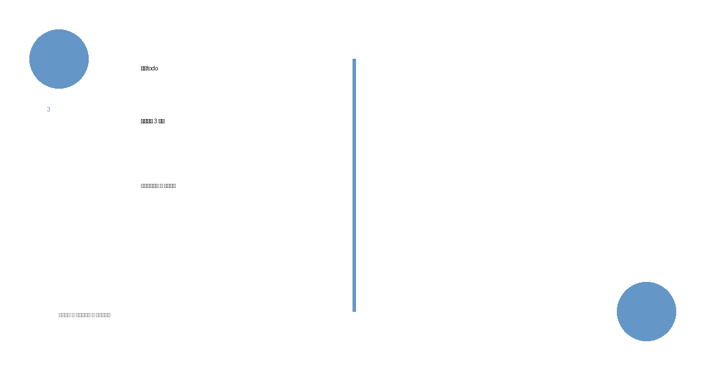

什么是「今日todo」
「今日todo」是一种任务管理方法论，核心理念是：每天只规划 3 件事。
这不是效率鸡汤，而是一种基于认知科学的减法策略。
核心理念：为什么 3 件比 30 件更科学
认知负荷理论的解释
人类工作记忆的容量有限。心理学研究表明，大脑同时处理的信息单元通常不超过 4-7 个。当清单上的任务数量超过这个阈值时，大脑会进入「超载状态」：
- 决策疲劳：每完成一项任务都需要消耗决策资源，任务越多，意志力消耗越快
- 注意力分散：未完成的任务会持续占用认知资源，形成「心智占线」
- 虚假完成感：列清单本身会产生满足感，但这种满足感与实际完成度无关
「今日todo」的 3 件原则，将任务数量控制在认知负荷的安全范围内，确保每件事都能获得足够的注意力。
3 条核心规则
规则 1：只列 3 件
每日任务上限为 3 件。多出的任务不列入今日清单，而是归入「待转移清单」。
规则 2：区分「要做的」和「想做的」
- 要做的：他人期待或责任驱动的工作（必须完成）
- 想做的：个人成长或兴趣驱动的行动（自愿完成）
3 件任务中，建议「要做的」占 2 件，「想做的」占 1 件。
规则 3：完成后才能加新任务
当日任务一旦完成 1 件，可从待转移清单中补充 1 件。始终保持 3 件的任务存量，但不突破上限。
为什么我们总是做不完 todo
两个核心原因
1. 虚假成就感
列出长清单会触发大脑的奖励机制，产生「我已经做了很多」的幻觉。但这种幻觉与实际产出脱节，最终导致挫败感。
2. 逃避选择
不做优先级排序是最安全的选择——「都重要」意味着「都不急」。结果是重要的事永远被紧急的事淹没。
心理建议：接受有限性
每个人每天的有效工作时间有限。「做不完」不是能力问题，而是现实约束。承认这一点，才能专注于真正重要的事。
常见问题
Q：事情太多怎么办？
A：排序。只选 3 件意味着必须放弃其他 87 件。放弃是必要的。
Q：突发事件打乱计划怎么办？
A：接受。突发事件是常态，不是例外。计划的价值不在于执行，而在于提供决策锚点。调整后重新选 3 件。
进阶：周todo → 月todo
「今日todo」的逻辑可向上延展：
- 周todo：每周只规划 3 件关键成果
- 月todo：每月只规划 3 件核心目标
层级越往上，允许的任务数量越少，聚焦程度越高。
💡 核心启示
「今日todo」不是追求完成更多，而是放弃更多。选择的价值，来自放弃的清晰。